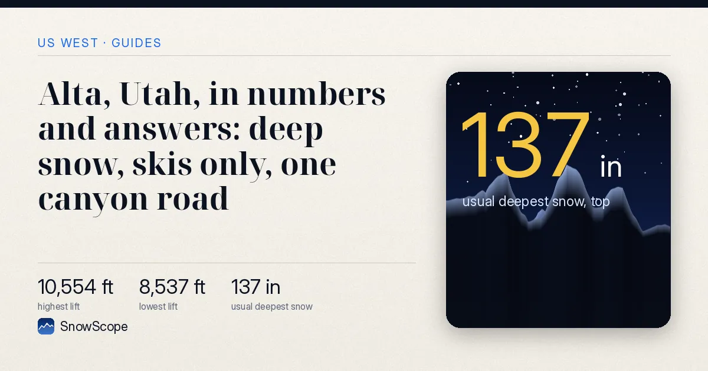
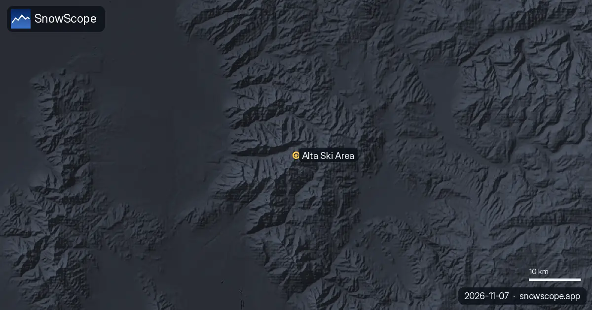

Alta, Utah, in numbers and answers: deep snow, skis only, one canyon road
Alta gets more snow than almost any US ski area, and the pack stays deep for months. Before your first trip, know the three things that set it apart: skis only, steep terrain, and a single canyon road that can close in storms.
See the live snow forecast for Alta Ski Area in the SnowScope appSnow depth, powder alerts and the 3D map, free.

Snow depth by elevation: where the best cover is
Height matters here. At the base, around 8,530 ft (2,602 m), the usual peak is 73 in (184 cm). Mid-mountain, at 9,544 ft (2,909 m), it reaches 109 in (276 cm). Near the summit, 10,554 ft (3,217 m), you get 137 in (348 cm). The upper half of the mountain holds nearly twice the snow of the base.
In 9 out of 10 winters, mid-mountain keeps at least 20 in (50 cm) of cover for 20 weeks straight. That means from late November through April, strong skiers have good odds of solid snow on the steep terrain above the mid-station. Early season, though, is thinner: the usual November depth at mid-mountain is only 14 in (36 cm).

Month by month: when to find your snow
December through April is when to plan a trip. November and May are risky; last snow often falls in June, but by then the base is thin. December usually brings 42 in (106 cm) at mid-mountain, January 69 in (175 cm), February 83 in (211 cm). March is the deepest month, with 89 in (227 cm), and April still holds 83 in (212 cm).
February and March give the best odds of deep, stable snow across all heights. If you go in December, expect cover only on the upper slopes. At the summit, April becomes the peak month with around 110 in (279 cm), so late-season skiers aiming for corn snow should head high.
Storms and snow type: why the powder is often light
Storms cross the Great Basin desert before hitting the Wasatch Mountains, which means much of the moisture is wrung out on the way. The snow that falls is often light and dry, a gift for skiers. But forecasts are hard: one storm never behaves like the last, so confidence in any single powder day is low.
The area records about 545 in (13.8 m) of snow per year on average, one of the highest in North America. Most falls as powder, but the variability is high. Trust the depth numbers more than the promise of fresh snow on any given morning.
Terrain for each level: steep bowls, cruising, and beginner slopes
The 2,614 acres span from gentle runs at the bottom to serious chutes and bowls near the top. Beginners stay low, where slopes are quiet and forgiving. Intermediates find long, easy cruises that let them build speed. Advanced and expert skiers come for the steep bowls, tight tree glades, and chutes that hold powder for days after a storm.
The vertical is 2,538 ft (774 m), compact by big-mountain standards but dense with terrain. No flat-bottomed runs or slow cat-track traverses make this a place where good skiers can keep moving all day without leaving the boundary.
Is snow declining? A 46-winter comparison
We looked at the first 15 winters of our record against the last 15. At mid-mountain, the usual peak fell from 111 in (283 cm) to 98 in (248 cm), and the number of snow days dropped from 226 to 215. The trend is real but gradual; most seasons still bring deep cover. The safety margin for thin base layers has simply shrunk.
Last winter, 2025-26, was the leanest of the 46 on record: mid-mountain peaked at only 62 in (158 cm), well below normal. Even in that lean year, the top of the mountain held 75 in (191 cm). Early-season skiers and those at the base now face more rock exposure than they did decades ago.
Getting there: the canyon road and what can stop you
Alta sits at the head of Little Cottonwood Canyon, reached by State Route 210 from Salt Lake City. On storm mornings, traffic climbs and avalanche danger can close the road entirely. Winter tires are essential; chains may be required. Plan to leave the valley early, especially on fresh-snow days.
Lodging at the top is sparse, so most visitors drive up from the city or take the bus. Beds fill fast during Christmas week and February, when the snow is deepest and families have time off. On weekdays in January, the road is usually quiet.
Rules and safety: skis only, and backcountry avalanche work
Snowboarders are not allowed. Alta is one of only three US ski areas with this rule. If your group includes snowboarders, Snowbird lies just across the ridge, in the same canyon, and has sold a joint pass with Alta since 2002, giving access to both resorts and the terrain in between.
In bounds, ski patrol controls avalanche danger. Beyond the boundary, this is serious avalanche terrain. Carry a transceiver, probe and shovel, ski with trained partners, and read the Utah Avalanche Center forecast before each day in the backcountry.
Tips for skiers
- Skis only: Snowboarders in your group should plan to ski Snowbird, just across the ridge with a linked pass.
- Aim for February or March for the deepest snow across all elevations and the best odds of a stable pack.
- On fresh-snow mornings, the canyon road is the bottleneck, not the skiing. Leave the valley early.
- December can work, but expect thin cover at the base and mid-mountain. Go high or wait for January.
- Going off-piste? Check the Utah Avalanche Center forecast and never go alone. Carry and know how to use rescue gear.
About these numbers
Resort snow depths are the deepest snow on the resort's upper slopes on the date shown; they are estimates for an area, not a measurement at one point. Forecasts can change. Always read the official avalanche bulletin before going off-piste.
Official avalanche bulletins: Utah Avalanche Center
Cite this report
For research, teaching or the press: the numbers and charts are free to reuse under CC BY 4.0 with this citation.
SnowScope (2026), Alta, Utah, in numbers and answers: deep snow, skis only, one canyon road, https://snowscope.app/blog/en/2026/11/alta-ski-area-questions-answered.html, accessed 2026-11-09
SnowScope (Atlas Labs). (2026, November 9). Alta, Utah, in numbers and answers: deep snow, skis only, one canyon road. SnowScope snow reports. https://snowscope.app/blog/en/2026/11/alta-ski-area-questions-answered.html
BibTeX
@misc{snowscope2026altaskiareaquestionsansw,
author = {{SnowScope (Atlas Labs)}},
title = {Alta, Utah, in numbers and answers: deep snow, skis only, one canyon road},
year = {2026},
month = nov,
howpublished = {\url{https://snowscope.app/blog/en/2026/11/alta-ski-area-questions-answered.html}},
note = {Published 2026-11-09 14:17 UTC; accessed 2026-11-09}
}· CC BY 4.0 · Methods, data and tools →
Alta Ski Area: snow and temperature by height, this winter vs last (tools) →
Follow Alta Ski Area
Free: a message when fresh snow is coming, and the forecast every morning.
More snow reports

Mt Baker got 11 in (27 cm) of new snow in the last 72 hours, 4 in (11 cm) of it in the last 24 hours. It now has about 19 in (47 cm) on its upper …

On 6 November, 3 of 5 major resorts in the US West have snow deeper than the average for this date in the past 46 winters.

Mt Baker leads the US West with 19 in (47 cm) of upper snow, expecting 13 in (33 cm) through November 9. Model forecast from November 6.